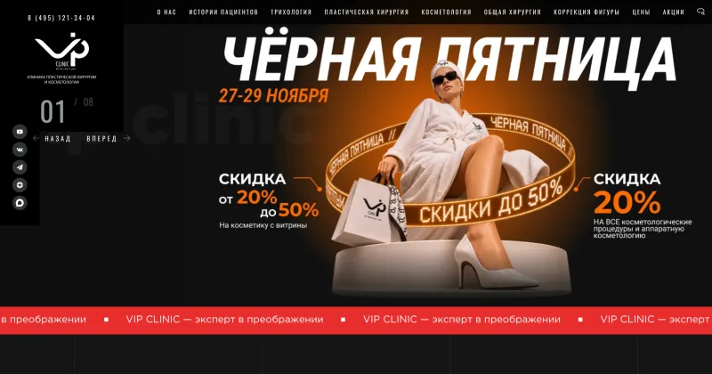

Артем Ширнин
Привлекаю пациентов в клинику пластической хирургии и косметологии VIP Clinic. По дороге пришлось стать аналитиком, разработчиком и дизайнером

vipclinic.vip
Чем сейчас занят
Выясняю, какими должны быть страницы услуг и врачей на сайте клиники, чтобы быть полезными как для людей, так и для поисковых роботов. Хотя сегодня мы говорим о том, что в обоих случаях речь идет Google: «Focus on the user and all else will follow», без манипулирования конкретными приемами нельзя добиться одновременного роста трафика и конверсий.
Контакты
@adoreyouaugust (tg)
Обновлено